专辑列表

DO IT
2025-11-21
.jpg)
CEREMONY (Celebrate Remixes)
2025-08-29
.jpg)
CEREMONY (Maximum Power Remixes)
2025-08-25

KARMA
2025-08-22
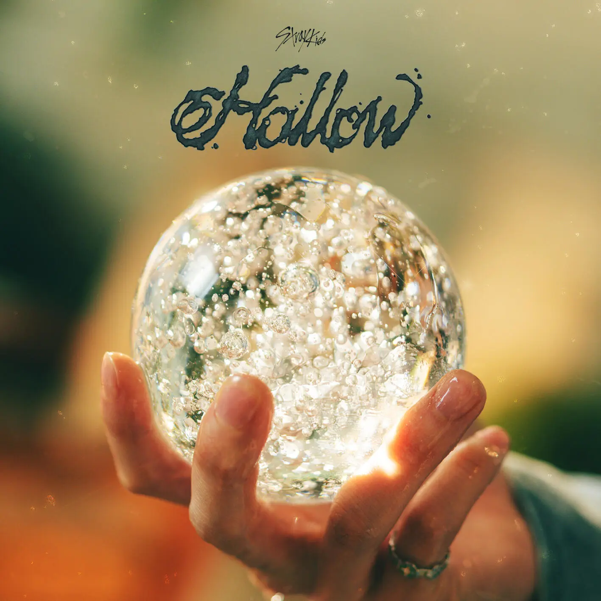
Hollow
2025-06-18

Mixtape : dominATE
2025-03-21
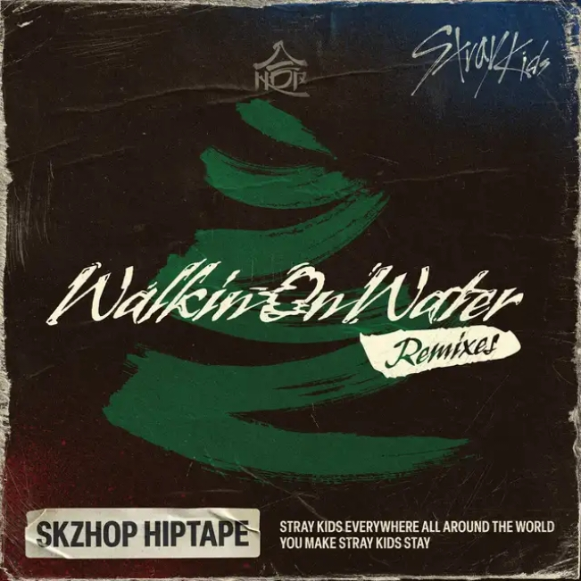
Walkin On Water (Remixes)
2024-12-16

HOP
2024-12-13

Giant
2024-11-13

SLASH
2024-07-23
Chk Chk Boom (Remixes)
2024-07-22

ATE
2024-07-19

Lose my breath
2024-05-10
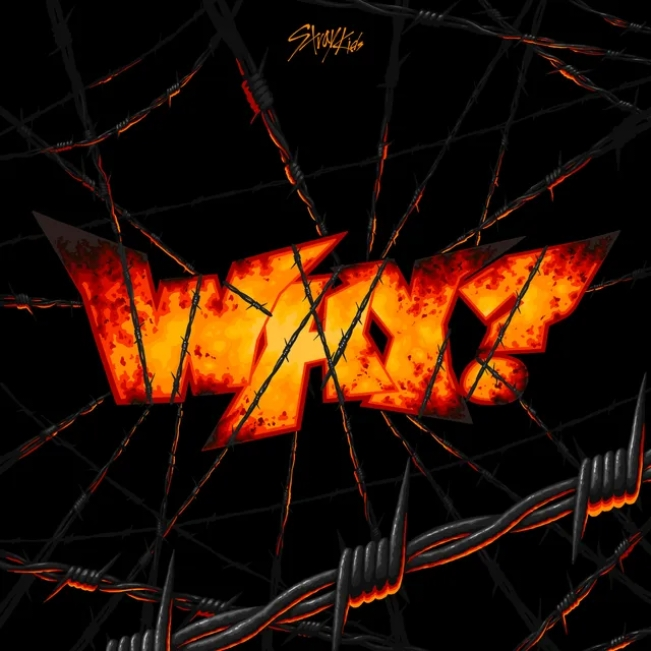
WHY?
2024-04-12

Rock-Star
2023-11-10

Social Path /Super Bowl
2023-09-06
5-STAR
2023-06-02

The Sound
2023-02-22
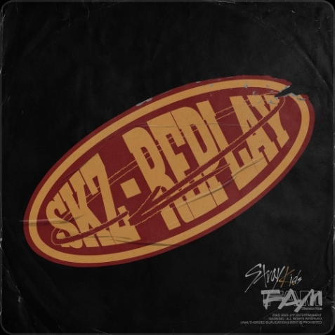
SKZ-REPLAY
2022-11-21
MAXIDENT
2022-10-21
Circus
2022-06-22

Mixtape: Time Out
2022-08-01

ODDINARY
2022-03-18
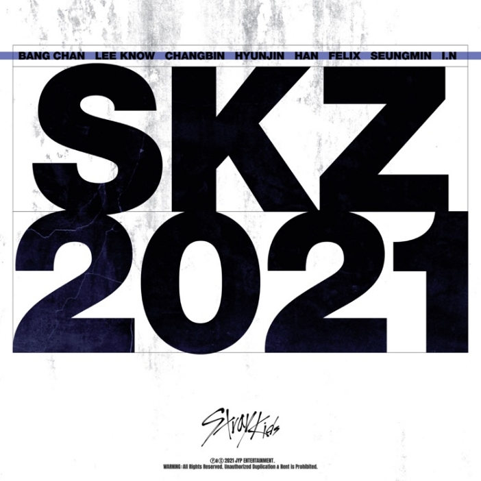
SKZ 2021
2021-12-23
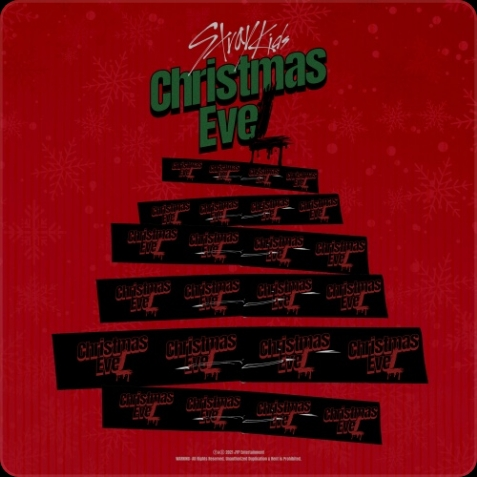
Christmas Evel
2021-11-29
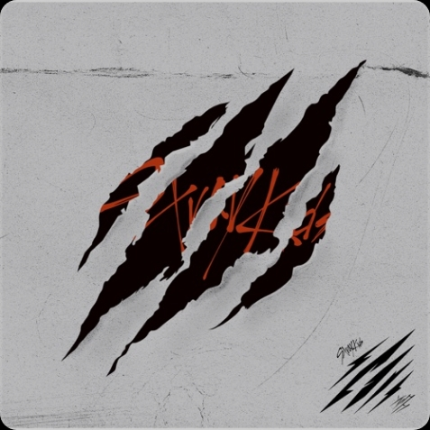
Scar
2021-10-13

NOEASY
2021-08-23

Mixtape: OH
2021-06-26

ALL IN
2020-10-27

IN生
2020-09-14

POP OUT BOY! Part 1
2020-07-16
GO生
2020-06-17

TOP
2020-05-13
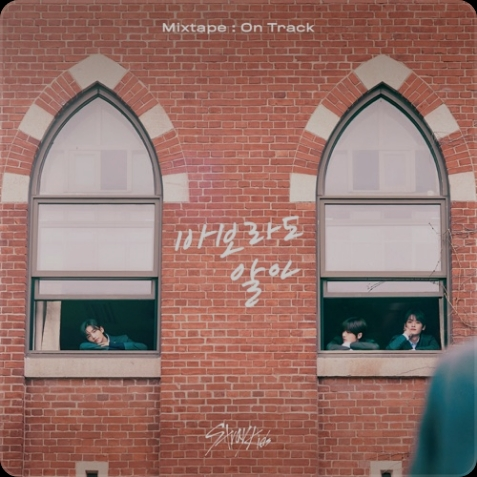
Mixtape: On Track
2020-03-25

SKZ 2020
2020-03-18
Mixtape: Gone Days
2019-12-26
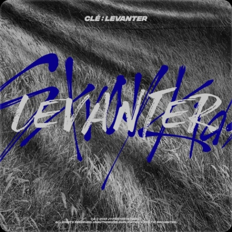
Clé : LEVANTER
2019-12-09
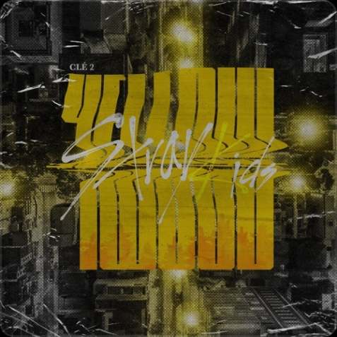
Clé 2 : Yellow Wood
2019-6-19

Clé 1 : Miroh
2019-03-25
I am YOU
2018-10-22

I am WHO
2018-08-06
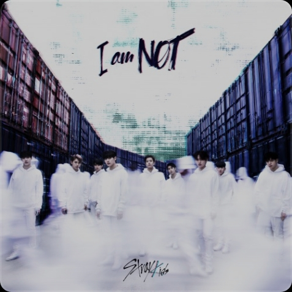
I am NOT
2018-03-26
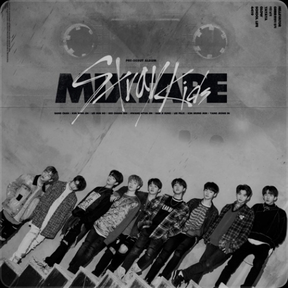
Mixtape
2018-01-08